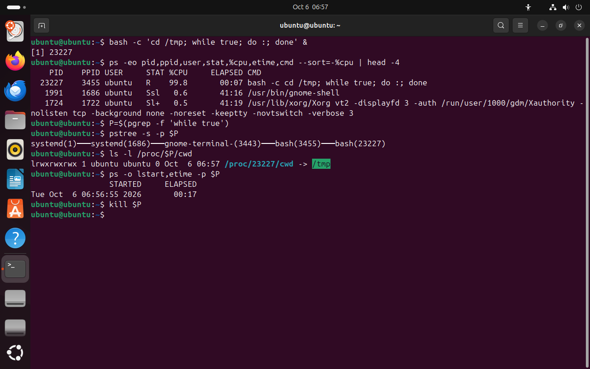

Часть 3 из 7
Поиск виновника: ps, pstree и /proc
В этой части разберём, как командой ps найти процесс, который занял процессор или память, и как узнать, кто его запустил и из какого каталога.
3.1 ps с сортировкой
Вывод top меняется каждые три секунды, его неудобно сохранять и разбирать. Неподвижный список с нужными столбцами выводит ps: ключ -e выбирает все процессы системы, -o — нужные столбцы, --sort — порядок.
Знак минус перед именем столбца в --sort сортирует по убыванию. --sort=-%cpu ставит наверх самый загруженный процесс, --sort=-rss — процесс, занявший больше всего памяти. head оставляет заголовок и первые строки.
| Столбец ps | Что показывает |
|---|---|
pid, ppid | номер процесса и номер родителя |
user | владелец |
ni | поправка приоритета nice |
stat | состояние |
%cpu | средняя загрузка процессора за всю жизнь процесса |
%mem, rss | доля памяти и занятая память в килобайтах |
etime | сколько процесс работает |
cmd | командная строка с аргументами |
Сортировка — как список должников в библиотеке, упорядоченный по сроку просрочки. Первая строка сразу показывает, с кого начинать разговор.
3.2 Откуда взялся процесс
Чтобы решить, что делать с найденным процессом, нужно понять, кто его запустил. Для этого есть три команды.
| Команда | Что отвечает |
|---|---|
pstree -s -p PID | цепочка родителей от PID 1 до процесса: служба, терминал или другая программа |
ls -l /proc/PID/cwd | текущий каталог процесса: где он работает |
ps -o lstart,etime -p PID | когда процесс запущен и сколько работает |
Ключ -s у pstree показывает предков процесса. Если в цепочке есть gnome-terminal и bash, процесс запущен из терминала. Если над ним сразу systemd — это служба или сирота, у которой завершился родитель.
В опыте мы запустим процесс, который бесконечно крутит пустой цикл в каталоге /tmp, и найдём его по списку ps. Запись P=$( … ) сохраняет вывод команды в переменную P, а pgrep -f находит PID по фрагменту командной строки, который виден в списке.
В списке рядом с виновником может оказаться сама команда ps с большим %CPU. Она только что запустилась, а %CPU в ps — среднее за жизнь процесса, поэтому у новых процессов оно завышено. Такую строку пропускают.
bash -c 'cd /tmp; while true; do :; done' &# неизвестный процессчто делает
Что делает команда. Запускает в фоне оболочку, которая переходит в /tmp и бесконечно крутит пустой цикл, занимая ядро.
По частям:
bash -c '…'- запустить bash и выполнить команды из строки
cd /tmp- перейти в каталог /tmp: он станет текущим каталогом процесса
while true; do :; done- бесконечный цикл; двоеточие — пустая команда, процесс просто крутится
&- запустить в фоне
ps -eo pid,ppid,user,stat,%cpu,etime,cmd --sort=-%cpu | head -4# самые загруженныечто делает
Что делает команда. Выводит все процессы системы, отсортированные по загрузке процессора, и оставляет заголовок и три первые строки.
По частям:
ps- вывести сведения о процессах
-eo pid,ppid,user,stat,%cpu,etime,cmd- -e — все процессы системы; -o — выводить столбцы pid,ppid,user,stat,%cpu,etime,cmd
--sort=-%cpu- сортировать по загрузке процессора, минус — по убыванию
|- передать вывод левой команды на вход следующей
head- оставить только первые строки
-4- сколько первых строк оставить: 4
P=$(pgrep -f 'while true')# PID найденного процессачто делает
Что делает команда. Находит процесс, в командной строке которого есть while true, и сохраняет его PID в переменную P.
По частям:
P=$( … )- сохранить в переменную P вывод команды в скобках
pgrep- найти процессы и вывести их PID
-f- искать образец во всей командной строке, а не только в имени
'while true'- образец
pstree -s -p $P# кто его запустилчто делает
Что делает команда. Рисует цепочку предков процесса от PID 1 с номерами.
По частям:
pstree- нарисовать дерево процессов
-s- показать предков процесса — цепочку от PID 1
-p- показывать PID рядом с именем
$P- с какого процесса начинать, значение переменной P: сохранённый PID
ls -l /proc/$P/cwd# где он работаетчто делает
Что делает команда. Показывает, на какой каталог указывает ссылка cwd — текущий каталог процесса.
По частям:
ls- вывести содержимое каталога
-l- подробный список: права, владелец, размер, дата; для ссылки — куда она указывает
/proc/$P/cwd- что показать (абсолютный путь)
ps -o lstart,etime -p $P# когда запущенчто делает
Что делает команда. Выводит дату и время запуска процесса и сколько он работает.
По частям:
ps- вывести сведения о процессах
-o lstart,etime- выводить столбцы lstart,etime
-p $P- выбрать процесс: PID из переменной P
kill $P# завершитьчто делает
Что делает команда. Посылает процессу из переменной P сигнал TERM.
По частям:
kill- послать процессу сигнал
$P- какому процессу, значение переменной P: сохранённый PID
- 1PID виновника
- 2%CPU почти 100
- 3цепочка: systemd → терминал → bash → процесс
- 4текущий каталог процесса — /tmp
- 5запущен в 06:56:55, работает 17 секунд


Весь снимок ↗Самый загруженный процесс, его предки, каталог и время запуска.
Что показывает снимок. Первым по загрузке стоит bash -c с 99,8 %. Цепочка pstree ведёт от systemd через gnome-terminal и оболочку bash 3455 к процессу 23227. Текущий каталог процесса — /tmp, запущен он в 06:56:55.
Где это пригодится. По цепочке родителей видно, чей процесс: запущен из терминала — его владельца можно спросить; запущен службой — смотрят настройки службы.
3.3 Если процессов много
Программа часто состоит из родителя и нескольких потомков, которые и делают работу. Тогда в списке ps окажется несколько похожих строк с одним PPID. Их общий родитель виден в столбце ppid или в дереве pstree -p.
Всем потомкам сразу можно послать сигнал командой pkill -P PPID, а найти их — pgrep -P PPID. Если завершить только родителя, потомки продолжают работу: их усыновляет PID 1 или процесс-приёмник сеанса, и нагрузка остаётся прежней.
Итоги части 3
ps -eo поля --sort=-%cpu | head— самые загруженные процессы;--sort=-rss— самые большие по памяти.pstree -s -p PIDпоказывает, кто запустил процесс./proc/PID/cwd— где процесс работает,ps -o lstart,etime— когда запущен.- Завершение родителя не завершает потомков: их находят через
pgrep -P.
В отчётСнимок поиска: подпишите PID виновника, цепочку его родителей и текущий каталог.